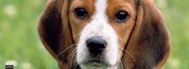

Basset Hound
Na Inglaterra, os admiradores dos Dálmatas acreditam que ele é descendente do Braco de Bengala, cão bastante popular no século XVIII. O nome da raça se dá pela região onde foram localizados diversos Na Inglaterra, os admiradores dos Dálmatas acreditam que ele é descendente do Braco de Bengala, cão bastante popular no século XVIII. O nome da raça se dá pela região onde foram localizados diversos exemplares, na Dalmácia (antiga Croácia). Após isso, muitos foram vistos ao lado de cavalheiros ingleses.exemplares, na Dalmácia (antiga Croácia). Após isso, muitos foram vistos ao lado de cavalheiros ingleses.
emplares, na Dalmácia (antiga Croácia). Após isso, muitos foram vistos ao lado de cavalheiros ingleses.exemplares, na Dalmácia (antiga Croácia). Após isso, muitos foram vistos ao lado de cavalheiros ingleses.
Dálmata